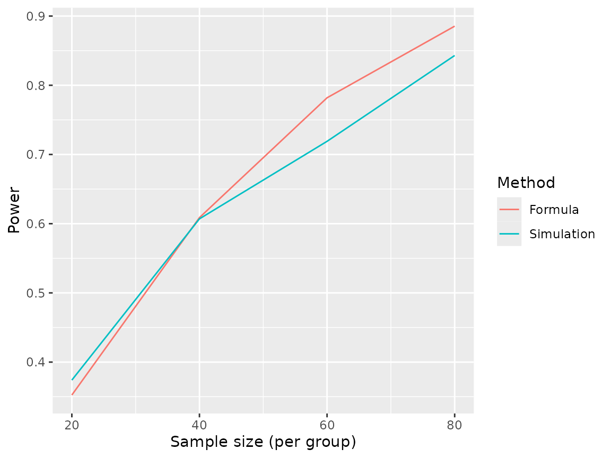

Calculating statistical power is a critical step in the design of experiments. For a given study design, the statistical power is defined as the probability that a hypothesis test correctly rejects the null hypothesis (assuming it is false). Sometimes, the sample size for a study is considered fixed, and interest lies in calculating power. More often, investigators want to know what sample size is needed to reject the null hypothesis at a given power level (e.g. 80% or 90%). We assume that the reader has some familiarity with statistical hypothesis testing.
For simple study designs (e.g. an individually randomized controlled trial with two groups), formulas exist to calculate the sample size necessary to reject the null hypothesis under certain assumptions around the distribution of your outcome, the effect size, etc. For example, in an experiment comparing means between two groups, the following formula is used to calculate the necessary sample size to reject a null hypothesis with power \(1-\beta\) and type I error rate \(\alpha\), where the outcome variable has means \(\mu_0,\mu_1\) and standard deviations \(\sigma_0^2,\sigma_1^2\) in the two groups and \(z_{\alpha/2}\) and \(z_\beta\) represent quantiles of the standard normal distribution:
\[n = \frac{(z_{\alpha/2}+z_\beta)^2(\sigma_0^2+\sigma_1^2)}{(\mu_0-\mu_1)^2}\]
However, for more complex study designs or analysis plans, formulas may not exist or may be very difficult to adapt to a particular setting. In these situations, an easier approach is to conduct simulation-based power calculations. The basic idea is that you repeatedly simulate your entire experiment and calculate the proportion of experiments in which the null hypothesis is rejected; this is your estimated power. Simulating your entire experiment will typically involve generating a dataset, and then running an analysis that involves a hypothesis test. Randomness is usually introduced into the process through the dataset generation, although sometimes you will fix a population dataset and induce randomization by taking samples from that population (e.g. to simulate survey data analyses). Often, the most difficult part is to simulate a dataset that accurately reflects the nuances (e.g. the correlation structure) of your real dataset.
If you want to calculate sample size at a fixed power level (e.g. 90%), you can use a “guess and check” approach. With this approach, you select a sample size \(n_1\) and run the simulation to estimate your power. If power is estimated to be lower than 90%, you select a new value \(n_2\) that is larger than \(n_1\) and run the simulation again. You repeat this procedure until the estimated power is roughly 90%.
We illustrate this process by simulating a randomized controlled trial and comparing our results to what we get from the formula above. We then show how our simulation can be modified to adapt to more complex scenarios.
First, we declare a new simulation object and write a function to generate data:
sim <- new_sim()
create_rct_data <- function(n, mu_0, mu_1, sigma_0, sigma_1) {
group <- sample(rep(c(0,1),n))
outcome <- (1-group) * rnorm(n=n, mean=mu_0, sd=sigma_0) +
group * rnorm(n=n, mean=mu_1, sd=sigma_1)
return(data.frame("group"=group, "outcome"=outcome))
}
# Test our data-generating function
create_rct_data(n=3, mu_0=3, mu_1=4, sigma_0=0.1, sigma_1=0.1)
#> group outcome
#> 1 1 4.078642
#> 2 0 2.991081
#> 3 0 2.889373
#> 4 1 4.078642
#> 5 0 2.991081
#> 6 1 3.784518Next, we add a function that takes a dataset generated by our function and runs a statistical test to decide whether to reject the null hypothesis:
run_test <- function(data) {
test_result <- t.test(outcome~group, data=data)
return(as.integer(test_result$p.value<0.05))
}Next, we write the simulation script and tell SimEngine to run 1,000 simulation replicates each for four sample sizes.
sim %<>% set_script(function() {
data <- create_rct_data(n=L$n, mu_0=17, mu_1=18, sigma_0=2, sigma_1=2)
reject <- run_test(data)
return (list("reject"=reject))
})
sim %<>% set_levels(n=c(20,40,60,80))
sim %<>% set_config(num_sim=1000)We are now ready to run the simulation. After obtaining results, we
calculate power by averaging the ‘reject’ variable using the
summarize function, which tells us the percentage of
simulations in which the null hypothesis was rejected.
sim %<>% run()
#> Done. No errors or warnings detected.
power_sim <- sim %>% summarize(
list(stat="mean", name="power", x="reject")
)
print(power_sim)
#> level_id n n_reps power
#> 1 1 20 1000 0.381
#> 2 2 40 1000 0.586
#> 3 3 60 1000 0.737
#> 4 4 80 1000 0.849We can compare our results to what we obtain by using the formula stated earlier.
power_formula <- sapply(c(20,40,60,80), function(n) {
pnorm(sqrt((n*(17-18)^2)/(2^2+2^2)) - qnorm(0.025, lower.tail=F))
})
library(ggplot2)
ggplot(data.frame(
n = rep(c(20,40,60,80), 2),
power = c(power_sim$power, power_formula),
which = rep(c("Simulation","Formula"), each=4)
), aes(x=n, y=power, color=factor(which))) +
geom_line() +
labs(color="Method", y="Power", x="Sample size (per group)")
Of course, real applications will typically involve much more complex data generating mechanisms and analyses, but the same basic principles illustrated in the code above will always apply to simulation-based power calculations.